Lviv University
What the source code says
Statements are written one after another, so they appear to be totally ordered: line 1, then line 2, then line 3.
But most of that order is an artefact of writing the program down. It is not required by the computation.
The real constraint
Statement \(B\) must come after statement \(A\) only if \[ B \text{ reads what } A \text{ wrote.} \] Everything else is free.
Three kinds of dependence
Only the first is about data. The other two come from reusing a name, and disappear if you rename — or never reassign at all.
Which is why
Single-assignment and functional style parallelize more easily: with no reassignment there are no false dependences, and what is left is the dataflow.
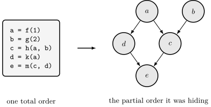
What the graph tells us that the listing did not
b never needed to wait for a — they can run at the same timed was written after c, but depends only on a; it can run before c, or beside itThe shift
The sequential program was one linearization of this graph. Any topological order of the graph computes the same result.
We stop asking “what runs next?” and start asking “what is allowed to run now?”
Granularity is ours to pick
A node can be a single instruction, a loop body, a function call, or “read this 100 MB file”. The theory does not care; the trade-off does:
We call a node a task and leave its size open for now.
The same idea, at every level
make is a DAG scheduler with files as nodesFrom here on
We assume the graph exists. The rest of the lecture is about what to do with it.
Representation
A parallel program can be represented by a node- and edge-weighted directed acyclic graph (DAG), in which:
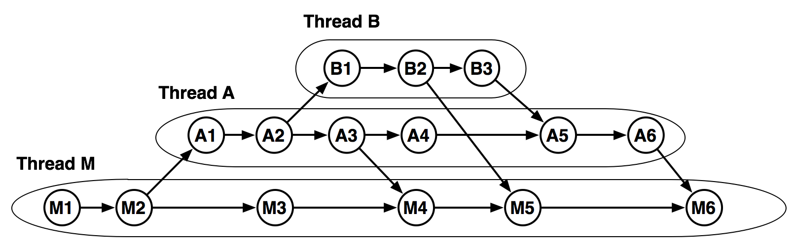
Generalization
Multithreaded computing can be viewed as a natural generalization of sequential computing in the following sense:
Ordering re-cap
A binary relation \(\preccurlyeq\) on some set \(X\) is called a partial order if \(\forall a,b,c \in X\) the following is true:
If, additionally, \(\forall a,b \ in X\) either \(a \preccurlyeq b\) or \(b \preccurlyeq a\), then the order is total.
Definitions
A parallel program can be represented by a directed acyclic graph (DAG) \[ G=(V,E), \]
where \(V\) is a set of \(v\) nodes and \(E\) is a set of \(e\) directed edges.
A node in the DAG represents a task which in turn is a set of instructions which must be executed sequentially without preemption in the same processor.
The weight of a node \(n_i\) is called the computation cost and is denoted by \(w(n_i)\).
Definitions
The edges in the DAG, each of which is denoted by \((n_i,n_j)\), correspond to the communication messages and precedence constraints among the nodes.
The weight of an edge is called the communication cost of the edge and is denoted by \(c(n_i, n_j)\).
The source node of an edge is called the parent node while the sink node is called the child node.
A node with no parent is called an entry node and a node with no child is called an exit node.
The communication-to-computation-ratio (CCR) of a parallel program is defined as its average edge weight divided by its average node weight.
Definition
Scheduling involves executing a parallel program by mapping the computation over the processors so that:
Definitions
\(ST(n_i)\) and \(FT(n_i)\) denote start time and finish time at some processor.
After all the nodes have been scheduled, the schedule length is defined as \(\max_i\left\{FT(n_i)\right\}\) across all processors.
The goal of scheduling is to minimize \(\max_i\left\{FT(n_i)\right\}\).
Scheduling is done in such a manner that the precedence constraints among the program tasks are preserved.
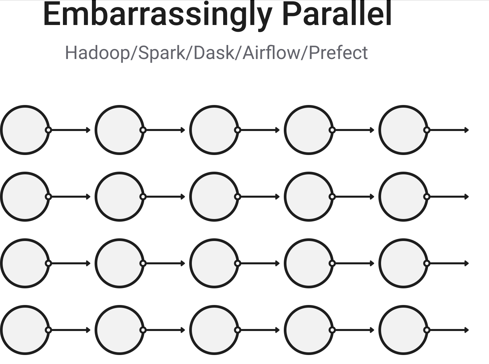
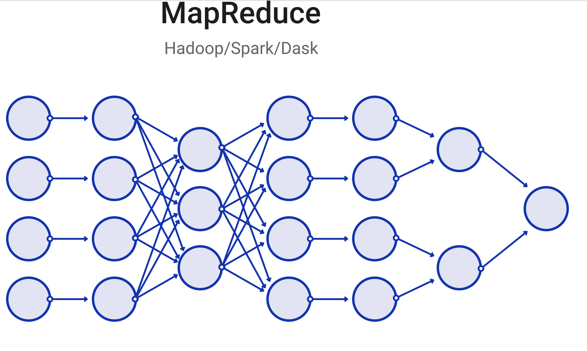
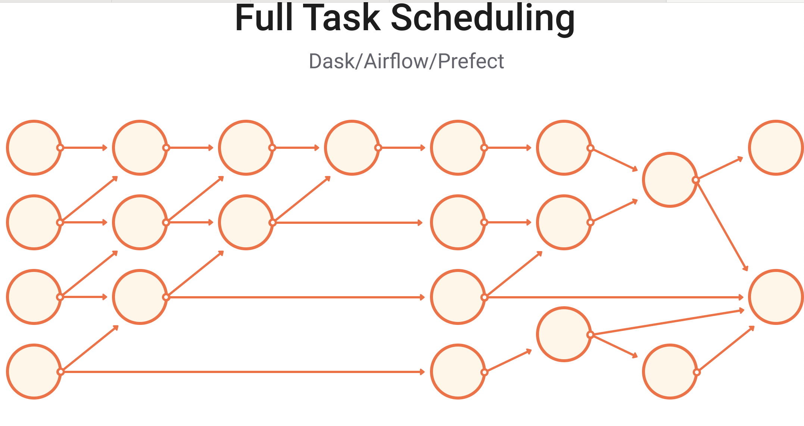
Work
Work is defined as the number of vertices in the DAG.
Work of a computation corresponds to the total number of operations it performs.
Span
Span is the length of the longest path in the DAG.
Span corresponds to the longest chain of dependencies in the computation.
Work[make]span
The overall finish-time of a parallel program is commonly called the schedule length or makespan.
Taxonomy
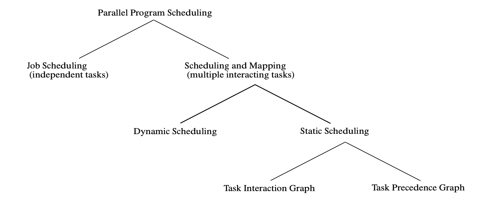
Types
Categories
Preemptive vs non-preemptive
Parallel vs non-parallel
Parallel task requires more than one processor for its execution.
With vs without conditional branches
In conditional model, each edge in the DAG is associated with a non-zero probability that the child will be executed immediately after the parent.
List scheduling
The basic idea of list scheduling is to make a scheduling list (a sequence of nodes for scheduling) by assigning them some priorities, and then repeatedly execute the following two steps until all the nodes in the graph are scheduled:
Greedy Scheduler
We say that a scheduler is greedy if whenever there is a processor available and a task ready to execute, then it assigns the task to the processor and starts running it immediately. Greedy schedulers have an important property that is summarized by the greedy scheduling principle.
Greedy Scheduling Principle
The greedy scheduling principle postulates that if a computation is run on \(P\) processors using a greedy scheduler, then the total time (clock cycles) for running the computation is bounded by \[ T_P < \frac{W}{P} + S \] where \(W\) is the work of the computation, and \(S\) is the span of the computation (both measured in units of clock cycles).
Optimality of Greedy Schedulers
Firstly, the time to execute the computation cannot be less than \(\frac{W}{P}\) clock cycles since we have a total of \(W\) clock cycles of work to do and the best we can possibly do is divide it evenly among the processors. Secondly, the time to execute the computation cannot be any less than \(S\) clock cycles, because \(S\) represents the longest chain of sequential dependencies. Therefore we have \[ T_P \geq \max\left(\frac{W}{P},S\right). \] We therefore see that a greedy scheduler does reasonably close to the best possible. In particular, \(\frac{W}{P} +S\) is never more than twice \(\max\left(\frac{W}{P} ,S\right)\).
The same bound, other names
The greedy scheduling principle is also known as Brent’s theorem (Brent, 1974) and, in the list-scheduling literature, as Graham’s bound: \[ \max\left(\frac{W}{P}, S\right) \;\leq\; T_P \;<\; \frac{W}{P} + S \;\leq\; 2\max\left(\frac{W}{P}, S\right). \]
Read it as a design rule
Two knobs, and only two: grow the work you can spread (\(W/P\)), shorten the critical path (\(S\)). Everything a scheduler does is fighting for the constant factor between those bounds.
Relation to Amdahl
Amdahl’s law assumes a program splits into a serial fraction \(s\) and a perfectly parallel rest. The DAG model says where \(s\) comes from: it is the span.
A reduction written as a chain has \(S = \Theta(n)\); written as a tree, \(S = \Theta(\log n)\). Same work, same answer, different ceiling.
The bad news
Minimizing makespan on \(P\) processors under precedence constraints – \(P \mid prec \mid C_{\max}\) – is NP-complete (Ullman, 1975).
It stays NP-complete even when every task takes exactly one time unit – the durations are not what makes it hard, the precedence structure is.
Adding communication costs (\(P \mid prec, c_{ij} \mid C_{\max}\)) makes it NP-hard even with unlimited processors (Papadimitriou & Yannakakis, 1990).
The tractable corners
A handful of special cases are solvable exactly in polynomial time:
Still open
For a fixed number of processors \(m \geq 3\) with unit tasks and arbitrary precedence, the complexity is still an open problem – one of the oldest in scheduling theory.
So why bother with the theory?
Because the approximation results are surprisingly strong.
Graham (1966): any list schedule – no cleverness at all, just “never leave a processor idle if a task is ready” – satisfies \[ \frac{T_{\text{list}}}{T_{\text{opt}}} \leq 2 - \frac{1}{m}. \]
Why it works
At every instant, either all \(m\) processors are busy (we are burning through \(W\)), or some processor is idle – and then a task on a critical path must be running (we are burning through \(S\)).
And yet
For independent tasks (no precedence at all), sorting by longest-processing-time-first gives \[
\frac{T_{\text{LPT}}}{T_{\text{opt}}} \leq \frac{4}{3} - \frac{1}{3m} \qquad \text{(Graham, 1969)}
\] but the problem is still NP-hard – it contains PARTITION.
Scheduling two identical machines with no dependencies at all is already intractable.
The most useful counterexample in scheduling
List scheduling is within a factor of 2. But it is not monotone. Fix the priority list and then make the problem easier: the schedule can get worse.
An instance (Graham, 1969)
Nine tasks, priority list \(L = (T_1, \dots, T_9)\), three processors.
| task | \(T_1\) | \(T_2\) | \(T_3\) | \(T_4\) | \(T_5\) | \(T_6\) | \(T_7\) | \(T_8\) | \(T_9\) |
|---|---|---|---|---|---|---|---|---|---|
| time | 3 | 2 | 2 | 2 | 4 | 4 | 4 | 4 | 9 |
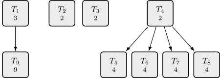
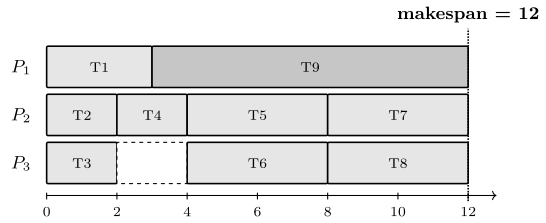
\(m = 3\), original times, original precedence
\(T_9\) (the long task) is the critical path. One processor idles from \(t=2\) to \(t=4\). This is optimal here.
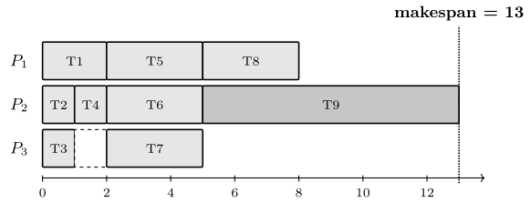
Subtract 1 from every execution time
Makespan 12 \(\to\) 13. Every single task finished sooner, and the program finished later.
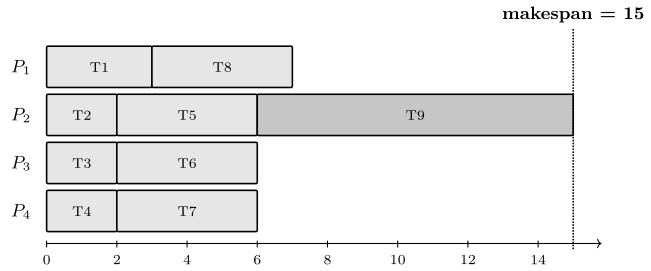
\(m = 3 \to 4\)
Makespan 12 \(\to\) 15. The fourth processor grabs \(T_4\) early, which releases \(T_5 \dots T_8\) early, which pushes the 9-unit \(T_9\) to the back of the list.
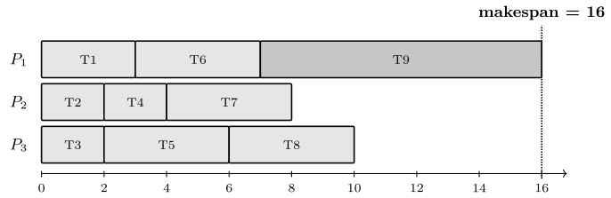
Drop all precedence constraints
Makespan 12 \(\to\) 16. Fewer constraints, longer schedule.
The bound on the damage
Graham proved the anomalies are bounded. Going from \(m\) to \(m'\) processors, with the same list: \[ \frac{T_{m'}}{T_m} \leq 1 + \frac{m-1}{m'}. \] So doubling the cluster can never more than roughly halve your gains – but it can absolutely make things worse.
What to take away
The gap between theory and a running cluster
Everything so far assumed:
| assumption | reality |
|---|---|
| \(w(n_i)\) known in advance | measured after the fact, if at all |
| identical processors | mixed hardware, noisy neighbours, throttling |
| fixed processor count | workers join and leave mid-job |
| processors never fail | they run out of memory and die |
| \(c(n_i,n_j)\) a constant | depends on where the data happens to be |
| the graph is known | it can be built while it runs |
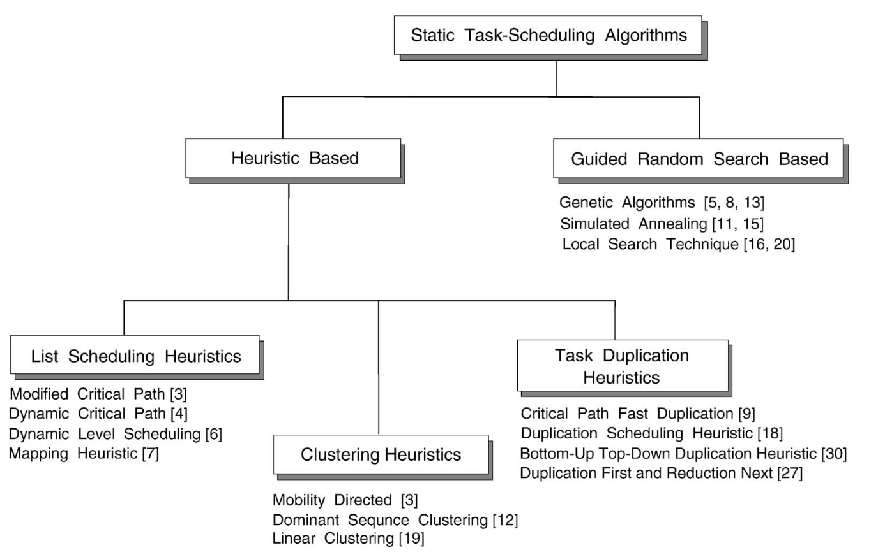
What’s a heuristic algorithm?
Algorithm used when classic methods are too slow for finding an exact or approximate solution, or when classic methods fail to find any exact solution in a search space.
This is achieved by trading
for speed.
In a way, it can be considered a shortcut.
List scheduling
A list-scheduling heuristic maintains a list of all tasks of a given graph according to their priorities. It has two phases:
Features
Clustering
Maps the tasks to unlimited number of clusters. The selected tasks for clustering can be any task, not necessarily a ready task.
Each iteration refines the previous clustering by merging some clusters.
If two tasks are assigned to the same cluster, they will be executed on the same processor.
Clustering: Extra final steps
Guided random search
Guided random search techniques (or randomized search techniques) use random choice to guide themselves through the problem space, which is not the same as performing merely random walks as in the random search methods.
These techniques combine the knowledge gained from previous search results with some randomizing features to generate new results.
Definition
Heterogeneous earliest finish time (HEFT) is a heuristic algorithm to schedule a set of dependent tasks onto a network of heterogeneous workers taking communication time into account.
Critical-Path-On-a-Processor (CPOP) algorithm uses the summation of upward and downward rank values for prioritizing tasks.
Definitions
Costs
Average execution cost: \[ \overline{w_i} = \sum\limits_{j=1}^q \frac{w_{i,j}}{q}. \] Communication cost of the edge \((i,k)\) for transfering data from task \(n_i\) scheduled on processor \(p_m\) to task \(n_k\) scheduled on processor \(p_n\): \[ c_{i,k} = L_m + \frac{data_{i,k}}{B_{m,n}} \] Average communication cost: \[ \overline{c_{i,k}} = \overline{L} + \frac{data_{i,k}}{\overline{B}} \]
Times
Earliest execution start time of task \(n_i\) on processor \(p_j\): \[ \begin{align*} & EST(n_{entry}, p_j) = 0, \\ & EST(n_i, p_j) = \max\left\{avail[j], \max\limits_{n_m \in pred(n_i)} (AFT(n_m)+c_{m,i})\right\}, \end{align*} \] where \(avail[j]\) is the earliest time at which processor \(p_j\) is ready for task execution.
Earliest execution finish time of task \(n_i\) on processor \(p_j\): \[ EFT(n_i, p_j) = w_{i,j} + EST(n_i,p_j) \]
After a task \(n_m\) is scheduled on processor \(p_j\), the earliest start time and the earliest finish time of \(n_m\) on processor \(p_j\) is equal to the actual start time \(AST(n_m)\) and the actual finish time \(AFT(n_m)\), respectively.
Workspan
After all tasks in the graph have been scheduled, the schedule length (makespan) will be equal to the actual finish time of the exit task \(n_{exit}\). In case of several exits: \[ makespan = \max \left\{AFT(n_{exit})\right\} \]
Definition
The objective function of the task scheduling problem is to determine the assignment of tasks to processors such that its makespan is minimized.
Upward rank
\[ \begin{align*} rank_u(n_i) = \overline{w_i} + \max\limits_{n_j \in succ(n_i)} \left(\overline{c_{i,j}} + rank_u(n_j)\right) \end{align*} \]
\[ rank_u(n_{exit}) = \overline{w_{exit}} \]
Downward rank
\[ \begin{align*} rank_d(n_i) = \max\limits_{n_j \in pred(n_i)} \left(rank_d(n_j)+ \overline{w_j} + \overline{c_{j,i}}\right) \end{align*} \]
HEFT
CPOP
CPOP
CPOP
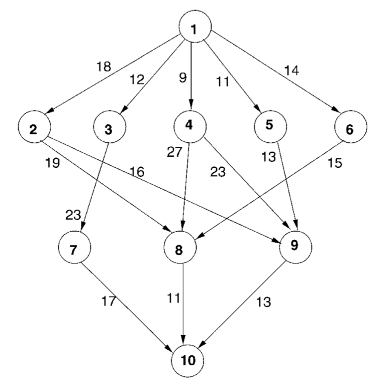
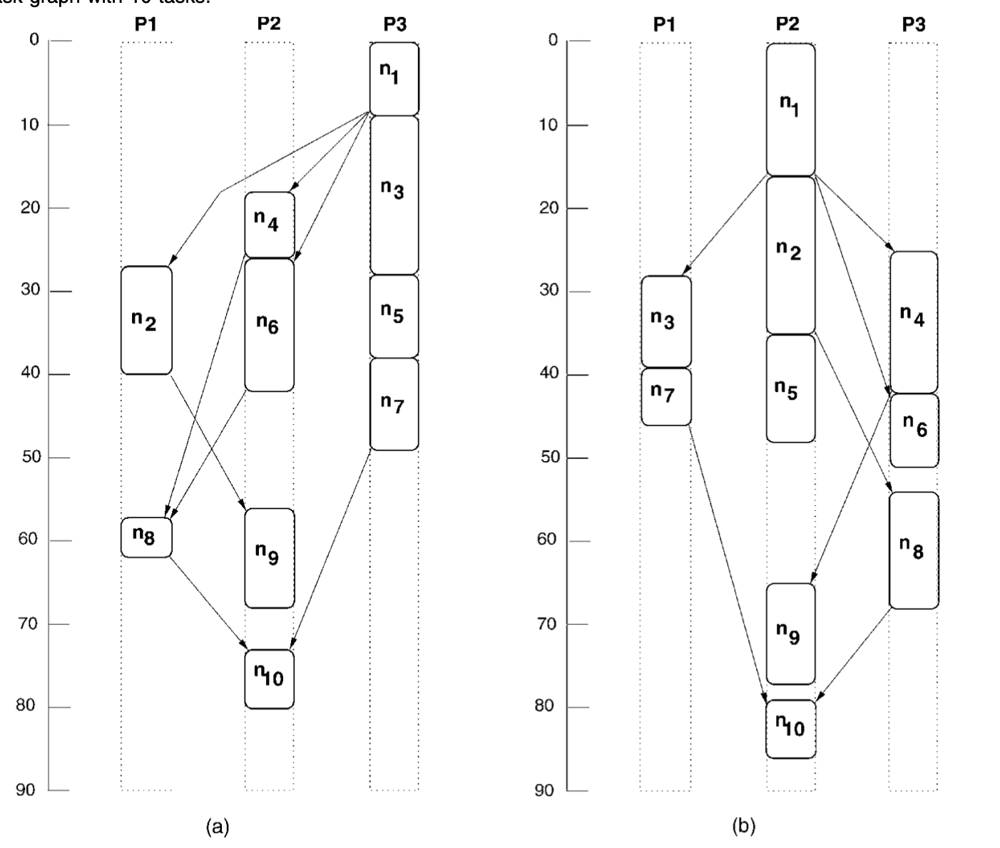
HEFT - (a), CPOP - (b)
HEFT needs a cost matrix. Where would you get one?
Static algorithms want \(w(n_i, p_k)\) and \(c(n_i, n_j)\) for every task and every processor, before anything runs. In a real analytics cluster:
And the graph itself may not be finished
dask.dataframe does not know partition sizes until it reads themThe pivot
Stop computing a schedule. Compute a policy: a cheap rule, re-evaluated constantly, that is good on average and recovers from being wrong.
Two ways to balance load
Why stealing wins
When everybody is busy, stealing costs nothing at all: no messages, no contention. Communication is proportional to the imbalance, not to the amount of work.
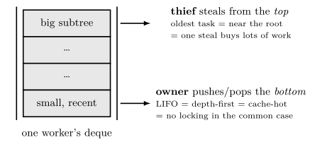
Why the two ends differ
dask.order later).Blumofe & Leiserson (1999)
For a fully strict computation with work \(T_1\) and span \(T_\infty\), randomized work stealing on \(P\) processors achieves \[ \mathbb{E}[T_P] \;=\; \frac{T_1}{P} + O(T_\infty) \] – provably within a constant factor of optimal, with no knowledge of task durations at all.
And two bounds that matter more in practice
Why random victim selection?
A thief picks a victim uniformly at random. No load table, no coordination, no central state.
If a constant fraction of the deques are non-empty, a steal succeeds with constant probability, so \(O(P)\) steal attempts suffice per unit of progress. Any attempt to be smarter reintroduces the shared state you were trying to avoid.
The work-first principle (Cilk)
Move overhead off the work path and onto the critical path. The work path executes \(T_1\) times; the steal path executes \(O(P\,T_\infty)\) times. Make the common case free, and let stealing be expensive.
The core tension
Two jobs pull in opposite directions:
Moving a task is cheap. Moving its 200 MB input is not.
Delay scheduling (Zaharia et al., 2010)
When the next task’s preferred node is busy: wait a few seconds instead of launching it elsewhere. Slots free up constantly, so a short wait almost always wins the local slot.
In the Hadoop fair scheduler this raised data locality to nearly 100% and roughly doubled throughput. Five lines of policy.
The power of two choices
Placing a task on a uniformly random worker of \(n\) leaves a maximum queue length of \(\Theta(\log n / \log\log n)\).
Sampling two at random and taking the shorter queue drops it to \(\Theta(\log\log n)\) – an exponential improvement, for one extra probe.
Why schedulers care
It means you can get near-centralized quality of placement with no centralized state at all. Sparrow builds a whole distributed scheduler out of this idea: batch sampling plus late binding – place reservations on several workers, and let the first one to become free actually claim the task.
The task that will not finish
In a 10 000-task stage, the makespan is set by the slowest task, not the average one. Causes: a bad disk, a hot node, skewed data, a background daemon, a garbage collection pause.
Speculative execution: once a stage is nearly done, launch duplicate copies of the laggards and take whichever finishes first.
Refinements
The tail at scale (Dean & Barroso, 2013)
If a single machine answers within 10 ms 99% of the time, then a request that fans out to 100 machines waits longer than 10 ms 63% of the time.
Rare slowness at the component level becomes the common case at the system level.
Techniques
hedged requests (send a second copy after the 95th-percentile delay), tied requests (send two, have them cancel each other), micro-partitioning, selective replication, “good enough” partial answers.
Costs you now own
Where we see this concretely
Lecture 5 walks through one real implementation — Dask’s ordering pass, placement rule, stealing loop, state machine and memory policy. First, one level up.
Two levels of scheduling
Everything so far was intra-job: one framework deciding which of its tasks runs on which of its workers.
But those workers are processes on machines that somebody else hands out — to this job and to fifty other tenants at the same time. That is cluster resource management, and it is a second, mostly independent scheduling problem.
Why it is harder, not easier
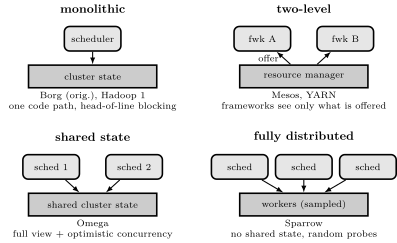
The trade-off in one line
Going down the list, you trade decision quality for decision throughput.
Worth knowing by name
| system | idea |
|---|---|
| Borg (Google, 2015) | monolithic, cells of tens of thousands of machines, priorities + quota, services and batch co-scheduled |
| Omega (Google, 2013) | shared state, optimistic concurrency control between many schedulers |
| Mesos (2011) | two-level offers; frameworks accept or decline |
| YARN (2013) | two-level requests; per-application masters |
| Kubernetes | filter (predicates) \(\to\) score (priorities) \(\to\) bind; pluggable framework |
| Sparrow (2013) | decentralized, batch sampling + late binding |
| Quincy (2009) / Firmament (2016) | encode fairness and locality as min-cost flow, solve it exactly |
What does “half the cluster” even mean?
User A’s jobs are CPU-bound; user B’s are memory-bound. Splitting cores evenly wastes memory; splitting memory evenly wastes cores.
Dominant Resource Fairness (Ghodsi et al., 2011): for each user, find the resource of which they consume the largest share – their dominant resource – and equalize those shares.
Why it caught on
DRF is strategy-proof (lying about your needs does not help), envy-free, and Pareto-efficient. It is the default in Mesos and in YARN’s capacity scheduler.
Even “be fair” turns out to be a research problem.
The numbers
Different problems, four orders of magnitude apart in task size.
What “scheduling” turned out to mean
We started with a clean statement – minimize \(\max_i FT(n_i)\) over a weighted DAG – and found:
Where the theory still earns its keep
The practical rule
Your job is to hand the scheduler a graph it can do well on: few enough tasks, big enough tasks, short enough span, small enough intermediates.
Where this lecture comes from
Scheduling theory
Parallel algorithms and task scheduling
Systems and clusters
Classical scheduling theory
DAG scheduling and heuristics
Work stealing
Cluster scheduling